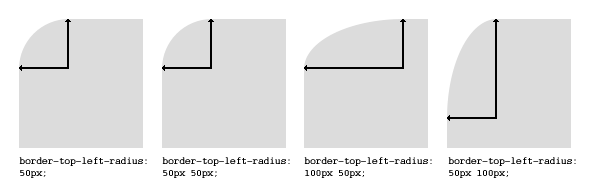

Borders
Border applies to any element.
div{
border : 1px solid green;
}
border has three value and all the three values are required. First value specifies the thickness of the border and second one is the style of the border, and third is the border color. This is the shortcut way of defining border. If you don't like the shortcut way you can go with the following way more specificly:
div{
border-width : 1px;
border-style : solid;
border-color : green;
}
The above will applied to all side of the border. If you wanna be more specific about the border you can use the followings:
div{
border-left : 1px solid grey;
border-right : 1px solid grey;
border-top : 1px solid grey;
border-bottom : 1px solid grey;
border-top-width : 1px;
border-top-style : solid;
border-top-color : red;
border-left-width : 1px;
border-left-style : solid;
border-left-color : yellow;
border-right-width : 3px;
border-right-style : dotted;
border-right-color : pink;
border-bottom-width : 2px;
border-bottom-style : dashed;
border-bottom-color : crimson;
}
You can use more value for the border-style like double, groove, ridge, inset, outset, none, hidden etc. We are not discussing any of these because in real life you will always be using the value solid. This is most common.
In the below example in border-style, border-color and border-width are the shortcut of all the four side. It allpies to all the four side of the border. you can still specify different value for different side using these property:
div{
// Applies to all four side.
border-width:3px;
// Top and bottom border is 3px and right and left border is 4px;
border-width : 3px 4px;
// top is 3px, right and left is 4px and bottom is 5px;
border-width : 3px 4px 5px;
// top is 1px, right is 2px, bottom is 3px, left is 4px
border-width : 1px 2px 3px 4px;
}
div{
// Applies to all four side.
border-style:solid;
// Top and bottom border is solid and right and left border is dotted;
border-style : solid dotted;
// top is solid, right and left is dotted and bottom is dashed;
border-style : solid dotted dashed;
// top is solid, right is dotted, bottom is dashed, left is groove;
border-style : solid dotted dashed groove;
}
div{
// Applies to all four side.
border-color:pink;
// Top and bottom border is red and right and left border is pink;
border-color : red pink;
// top is yellow, right and left is blue and bottom is green;
border-color : yellow blue green;
// top is crimson, right is white, bottom is black, left is grey;
border-color : crimson white black grey;
}
As you can see, the counting stars from top side and it goes clockwise.
border-radius
border-radius specifies the radius of the border. It rounds the corner. At the value 50%, the element has the circle shape.
<div style="height: 50px; width: 50px; background: crimson; border-radius: 50%"></div>
The property border-radius rounds all four corners. Following properties can be used for individual corners:
div{
border-top-left-radius : 50%; // Round top-left corner
border-top-right-radius : 50%; // Round top-right corner
border-bottom-left-radius : 70%; // Round bottom-left radius
border-bottom-right-radius : 70%; // Round bottom-right radius
}
border-radius can take percentage, em, rem, px etc value.
border-radius can take upto four values:
// first value applies to top-left corner, // second value applies to top-right corner // third value applies to bottom-right corner // and fourth value applies to bottom-left corner border-radius: 15px 50px 30px 5px; // first value applies to top-left corner // second value applies to top-right and bottom-left corners // third value applies to bottom-right corner border-radius: 15px 50px 30px; // first value applies to top-left and bottom-right corners // the second value applies to top-right and bottom-left corners border-radius: 15px 50px; // the value applies to all four corners, which are rounded equally border-radius: 15px;
border-radius Two Values
You can give every corner two values (so the maximum are 8 values) which is the radius in two directions (horizontal / vertical).
The first set of values define the horizontal radius. And optionally the second set of values, preceded by a ‘/’ (it's not a divison), defines the vertical radius. If only one set of values are supplied, these are used for both the vertical and horizontal radius.
<style type="text/css">
#rcorners1 {
border-radius: 50px / 15px;
background: #73AD21;
padding: 20px;
width: 200px;
height: 150px;
}
#rcorners2 {
border-radius: 15px / 50px;
background: #73AD21;
padding: 20px;
width: 200px;
height: 150px;
}
#rcorners3 {
border-radius: 50%;
background: #73AD21;
width: 200px;
height: 200px;
}
</style>
<div>
<p id="rcorners1"></p>
<p id="rcorners2"></p>
<p id="rcorners3"></p>
</div>
Slash Operataor and Space Operator
Note that the Slash operator only works for the property border-radius, not for it's individual corner properties. We are using (/) operator to let CSS know that the syntax is not two value syntax, rather it's one value syntax in which first one is for horizontal radius and second one is vertical radius that is going to be applied on all four sides. For individual corner properties use space to separate horizontal and vertical radius values.
Don't use border-radius property for complicated values. Use separated properties.
<style>
.demoBox{
width: 100px;
height: 100px;
background-color: red;
}
</style>
<div>
<div class="demoBox mb-3" style="border-top-right-radius : 50px 5px;"></div>
<div class="demoBox mb-3" style="border-bottom-left-radius : 5px 50px;"></div>
<div class="demoBox mb-3" style="border-radius : 5px / 35px;"></div>
</div>
Specify 8 value in border-radius
border-radius : 40px 30px 20px 10px / 10px 20px 30px 40px; // Same as the following -- border-top-left-radius : 40px 10px; border-top-right-radius : 30px 20px; border-bottom-right-radius : 20px 30px; border-bottom-left-radius : 10px 40px;
border-image
With the CSS border-image property, you can set an image to be used as the border around an element. The CSS border-image property allows you to specify an image to be used instead of the normal border around an element.
The property has three parts:
- The image to use as the border
- Where to slice the image
- Define whether the middle sections should be repeated or stretched
Throughout the example we are going to use the following image:

The border-image property takes the image and slices it into nine sections, like a tic-tac-toe board. It then places the corners at the corners, and the middle sections are repeated or stretched as you specify. For border-image to work, the element also needs the border property set!
The border-image property can be applied to any element, except internal table elements (e.g. tr, th, td) when border-collapse is set to collapse.
<style type="text/css">
.borderimg{
width: 300px;
height: 100px;
border: 10px solid transparent;
border-image: url("Assets/img/borderImage.png") 30 round;
}
</style>
<div class="borderimg"></div>
The border-image property is actually a shorthand property of the following properties and the order is from top to bottom:
border-image-sourceborder-image-sliceborder-image-widthborder-image-outsetborder-image-repeat
border-image-source
#borderimg {
border-image-source: url(border.png);
}
The border-image-source property specifies the path to the image to be used as a border (instead of the normal border around an element).
If the value is "none", or if the image cannot be displayed, the border styles will be used.
border-image-slice
The values of this property tell the browser where to “slice” the image to create the pieces of the border. The image is divided into 9 sections — the four corners, the four sides, and the center.
.module {
border-image-source: url(border.png);
border-image-slice: 20;
}
The property accepts up to four positive unitless numbers or percentages, and an optional fill keyword. The initial value is 100%.
Unitless numbers measure the slice by pixels on a raster image, and by coordinates on an SVG. A percentage value is relative to the size of the image. For example, on a raster image that is 100px x 100px, 10% from any side of the image is 10px. See the usage notes on SVG for more information about how percentages work on SVG images.
The values measure from the top, right, bottom, and left edges of the image (in that order). If one value is missing, its value defaults to the value of its opposite side — for example if the left value is missing, but the right value is set at 10px, the left value becomes 10px too.
By default, the center of the source image is discarded. But, when the fill keyword is used, it's applied to the background of the bordered element instead.
border-image-width
This property sets the width of the border image. It accepts a percentage value, a positive unitless number, pixel value, or the keyword auto.
The values are for the top, right, bottom, and left sides of the element (in that order). If one value is missing, it is drawn the same as its opposite value.
For this property, percentage values are relative to the size of the border image area, while a unitless number is multiplied with the border-width.
The initial value is 1, so if this value is not set but there's a border or border-width declaration for the element, the border image will be drawn at that width.
The auto keyword tells the browser to use either the size of the border-image-slice if available, or the size of the border-width.
#borderimg {
border-image-source: url(border.png);
border-image-width: 10px;
}
border-image-outset
The border-image-outset property specifies the amount by which the border image area extends beyond the border box.
The value for this property specifies how far the border image area extends past the border box. The initial value is 0. The property accepts up to four positive length values or unitless numbers. Length values are absolute measurements, while a unitless number is multiplied with the border width to compute the outset value, similar to how unitless numbers work for border-image-width.
#borderimg {
border-image-source: url(border.png);
border-image-outset: 10px;
}
border-image-repeat
This property controls how the image is repeated to fill the area of the border. The border-image-repeat property specifies whether the border image should be repeated, rounded or stretched.
You can specify up to two values for this property. If one value is specified, it's applied to both the horizontal and vertical sides of the border. If two are specified, the first is applied to the horizontal sides and the second is applied to the vertical sides.
stretchThe initial value. The border image is stretched as needed to fill the area.repeatThe image tiles to fill the area, dividing tiles if necessary.roundThe image tiles to fill the area, and is rescaled if necessary to avoid dividing tiles.spaceThe image tiles to fill the area. If the area can't be filled with whole tiles, space is inserted around the tiles for an even fit. Note: this value is not implemented by any browser yet.
.module {
border-image-source: url(border.png);
border-image-slice: 20;
border-image-width: 20;
border-image-outset: 1;
border-image-repeat: round;
}
Outline
The outline property in CSS draws a line around the outside of an element. It's similar to border except that:
- It always goes around all the sides, you can't specify particular sides
- It's not a part of the box model, so it won't effect the position of the element or adjacent elements.
- You cannot make it's corner round.
- Unlike border, the outline is drawn outside the element's border and may overlap other content.
Just like border it has the same syntax:
outline: [ <outline-width> || <outline-style> || <outline-color> ]
a:focus {
outline: 1px dashed red;
}
You can use solid, dashed, dotted, groove etc for outline style.
Outline Style, Width and Color
If you want to more specific you can use outline-style, outline-color, and outline-width to specify all three properties.
p{
outline-width: 100px;
outline-color:red;
outline-style : dashed;
}
Following is an example:
div{
height:100px;
width:100px;
background-color:red;
outline:5px dotted green;
}
Some browser adds an outline on some input element like textbox when they are focused. If you want to remove the outline either you can make the outline width 0 or you can use none keyword that works great.
input{
outline : none;
}
Outline Offset
The outline-offset property adds space between an outline and the edge/border of an element. The space between an element and its outline is transparent always.
div {
height:100px;
width:100px;
background-color:red;
outline:5px dotted green;
margin: 30px;
border: 1px solid black;
outline-offset: 35px;
}